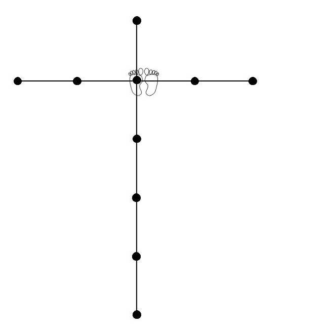

Chi-i-no Kata
* Alle standen in Kokutsu-dachi en alle stoten (tsuki) op chudan-hoogte.
1. Uitgangspositie Heisoku-dachi.
2. Rechtervoet naar achteren verplaatsen in Kokutsu-dachi, met links Age-uke.
3. Op de plaats Gyaku-tsuki.
4. Draai rechtsom 180° met rechts Shuto-uke.
5. Verplaats naar Zenkutsu-dachi (zonder voet te verplaatsen), met links Kagi-tsuki.
6. Met links Mae-geri, vorderen en meteen 180° over rechts draaien,
met rechts Uchi-uke.
7. Stap naar achteren, met links Uchi-uke.
8. Draai over rechts 360°, linkervoet meenemend, kijkend naar linkervuist die
in Uchi-uke blijft. Je komt uit met rechts voor, dan met rechts Uchi-uke.
9. Vorderen met Oi-tsuki, Ki-ai!
10. Draai rechtsom 180°, met rechts Age-uke.
11. Op de plaats Gyaku-tsuki.
12. Draai linksom 180° met links Shuto-uke.
13. Verplaats naar Zenkutsu-dachi (zonder voet te verplaatsen), met rechts Kagi-tsuki.
14. Met rechts Mae-geri, vorderen en meteen 180° over links draaien, met links Uchi-uke.
15. Stap naar achteren, met rechts Uchi-uke.
16. Draai over links 360°, rechtervoet meenemend, kijkend naar rechtervuist die in Uchi-uke blijft.
Je komt uit met links voor, dan met links Uchi-uke.
17. Vorderen met Oi-tsuki, Ki-ai!
18. Draai linksom 180° met Morote Gedan-barai.
19. Trek voorste voet bij naar Neko-achi-dachi met dubbele Uchi-uke.
20. Met links Mae-geri, neerkomen in Kokutsu-dachi met Morote Gedan-barai.
21. Met rechts Mae-geri op de plaats.
22. Rechtervoet bijtrekken, vervolgens naar rechts met klein sprongetje uitkomen in Enoji-dachi (linkervoet 45°
schuin naar achteren, diep doorgezakt), met rechts een soort Morote Uchi-uke naar achteren (maar met de
duim gebogen tegen de wijsvinger aan, de 'knik' als wapen gebruikend, wie de naam hiervan weet mag het zeggen...)
23. Linkervoet naar voren in Zenkutsu-dachi, maar met voeten op één lijn, met rechts Gedan-barai naar achteren,
naar afwerende vuist kijken en lichaam naar voren leunen.
24. Trek achterste voet bij, verzet dan naar rechts terwijl je 90° over links draait.
Nu dus links voor in Kokutsu-dachi met Morote Gedan-barai.
25. Trek voorste voet bij naar Neko-achi-dachi met dubbele Uchi-uke.
26. Met links Mae-geri, neerkomen in Kokutsu-dachi met Morote Gedan-barai.
27. Met rechts Mae-geri op de plaats.
28. Rechtervoet bijtrekken, vervolgens naar rechts met klein sprongetje uitkomen in Enoji-dachi (linkervoet 45°
schuin naar achteren, diep doorgezakt), met rechts een soort Morote Uchi-uke naar achteren (maar met de
duim gebogen tegen de wijsvinger aan, de 'knik' als wapen gebruikend... Naam hiervan???)
29. Linkervoet naar voren in Zenkutsu-dachi, maar met voeten op één lijn, met rechts Gedan-barai naar achteren,
naar afwerende vuist kijken en lichaam naar voren leunen.
30. Trek achterste voet bij, verzet dan naar rechts terwijl je 90° over links draait.
Nu dus links voor in Kokutsu-dachi met Morote Gedan-barai.
31. Met rechts Mae-geri op de plaats, bij neerkomen 180° over rechts draaien en met rechts Shuto-uke.
32. Verplaats naar lage Zenkutsu-dachi (zonder voet te verplaatsen), met links Kagi-tsuki.
33. Op de plaats met links Mae-geri, bij neerkomen 180° over links draaien en met links Shuto-uke.
34. Met beide handen als het ware de arm van de tegenstander vastgrijpen en naar je toetrekken,
rechtervuist daarbij in de zij trekkend, linkervuist op dezelfde hoogte als Uchi-uke.
35. Met rechtervoet naar voren stappen en overgaan in Kiba-dachi, met rechts Gedan-barai, linkerhand open bij
rechterschouder, palm naar buiten (rechts) gericht.
36. Met rechts Uraken-uchi naar rechts gericht, linkervuist in de zij trekken.
37. Met links Nihon-nukite, naar links gericht.
38. Trek rechtervoet op, draai lichaam 180° linksom en trap naar rechts Yoko-geri(-kekomi) jodan
(tegelijkertijd met rechterhand Nihon-nukite jodan), Ki-ai!
Zet voet neer in dezelfde richting als de trap en draai lichaam weer 180° linksom.
39. Met links Shuto-uke, maar heel langzaam en krachtig.
40. Zak door je rechterbeen in een diepe Zenkutsu-dachi en trek je achterste voet bij naar Heisoku-dachi (eindhouding) en afgroeten.
Ik ben nog niet helemaal gelukkig met de gedeeltes in de oranje kleur... Als iemand weet hoe dit correct heet, laat me dat s.v.p. dan weten. Het liefst mèt bronvermelding.
Terug naar Kata-pagina